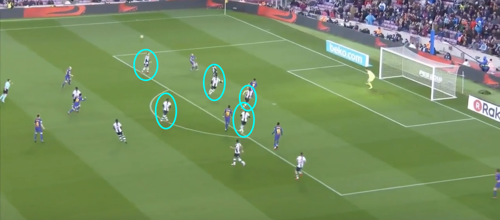
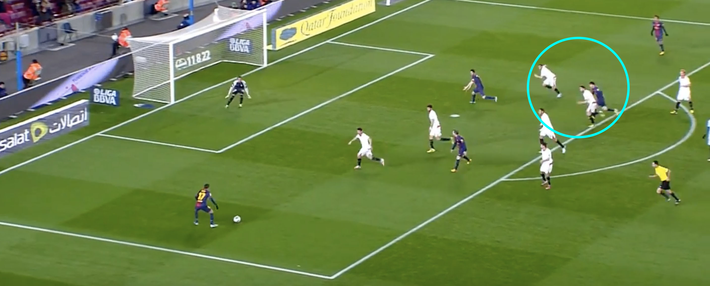
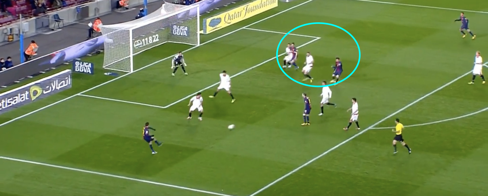
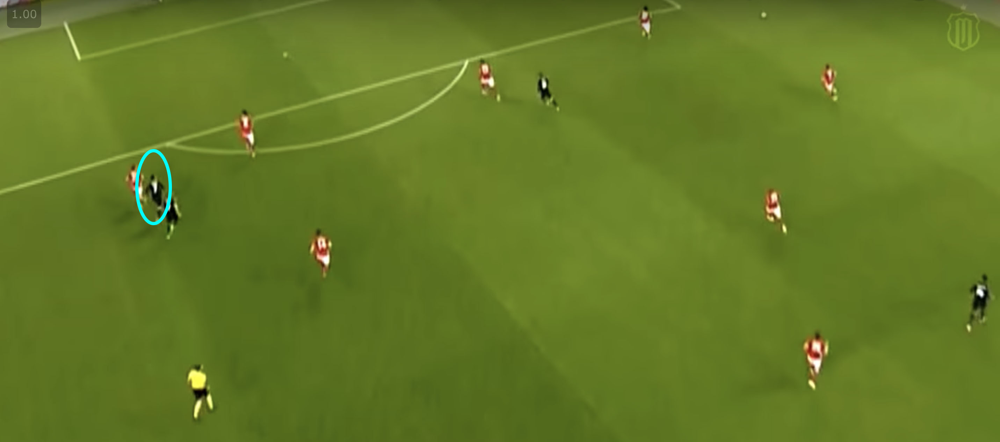
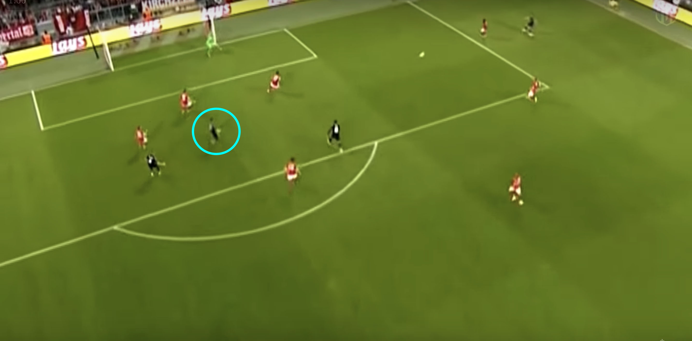

      <div class="post-size">

      <div class="w3-light-blue w3-light-grey w3-margin w3-padding-large">
        <div class="w3-center">
          <h3>Analyzing Messi and Ronaldo's "Tap-Ins"</h3>
          <h5><span class="w3-opacity">Jan 9, 2018</span></h5>
        </div>

        <div class="w3-justify">
          <p>Last month, I had the absolute pleasure of attending El Clasico at the Santiago Bernabeu. The game gave me the unique opportunity to watch the two greatest players of our generation, Lionel Messi and Cristiano Ronaldo, in action live. Though I am a stout Real Madrid fan and Los Blancos were thumped 0-3 at home, the game gave me a new appreciation for football players that I couldn't have gained through watching them on television. I noticed that Messi and Ronaldo were great when they had the ball, but they were even better off of it. In particular in this game, I was able to see how Messi analyzed every player on the pitch and timed his runs to perfection to always remain open.</p>
          <p>It got me curious; how often do Ronaldo and Messi make these impressive off the ball movements? Looking back, both the players score many "tap-ins", goals that many consider easy to score as the player is served the ball right infront of the goal. It got me thinking: Ronaldo and Messi are often marked closely by two or three people at all times, so how are these two open for such easy finishes so often? By analyzing their movement to get into these optimal positions, we can learn that these goals are actually a testiment to their mastery of this aspect of the game. </p>
          <h4>Lionel Messi</h4>
          <p>We will start with the little magician, as his versatility as both a playmaker and an attacker provides him the ability to make unique runs. On the ball, Messi is renowned for his slick dribbling and ability to pass by defenders with ease, often with body feints. Off the ball, awareness and vision of the opposition defense allows him to time his runs to perfection. We can see it as recently as this past game day for Barcelona, where Messi scored the first goal in a 3-0 defeat of Levante. In the following clip, Messi starts with the ball. Be sure to follow his movement after he makes his pass. </p>
          <iframe width="560" height="315" src="https://www.youtube.com/embed/XZByShpwf1o" frameborder="0" gesture="media" allow="encrypted-media" allowfullscreen></iframe>
          <p>A seemingly easy goal, but only due to the brilliance of Messi. The pass was a good one to pick out Jordi Alba on the edge of the box, but his awareness after the pass is what makes this special.</p>
          
          <p>As shown above, when the pass is made, all players focus on where the ball is headed; to the first wave of attackers. Every outlined Levante defender is focused on the ensuing attack in the box, which involves Alba, Paulinho, Suarez, and Dembele who are all poised to make an effort on goal at this point. As soon as Messi passes this ball, he darts towards edge of the box with none of the defenders picking him up. Messi makes, what some call, a second wave of attack. Defenders become so focused on the first wave (consisting of the aforementioned Barcelona players) since it poses the most immediate threat. They are unable to keep track of the second wave of attackers (in this case, Messi), who find themselves open and with space in the box, setting up an easy opportunity.</p>
          <p>Another example of Messi taking advantage of the second wave can be shown in the clip below. All credit belongs to the YouTuber MessiThunbo, as he does a great job breaking down the defenders who lose track of Messi and why they do so. Due to legal reasons, I am unable to embed the youtube video into the post, so check it out <a style="color:blue" href='https://www.youtube.com/watch?time_continue=468&v=m6aaxiEPZrs'>here</a>. Watch until 8:12.</p>
          <p>From Messi's second wave of attack trick, we move on to another technique Leo uses to get open; faking the run. To see an example of this, we will analyze a goal he scored from the center of the box against Sevilla in the 2012/2013 season. As in the last two clips, focus on Messi's movement after he drops the ball to Tello. Once again, due to legal reasons, check out the clip <a style="color:blue" href="https://www.youtube.com/watch?time_continue=294&v=6qeK_gi6tko">here</a>. Watch the video until 5:06.</p>
          <p>Once again, a goal which relies on Messi's ability to read the situation and react appropriately. As soon as Messi lays the ball, he is left in a very unideal situation. </p>
          
          He is marked very closely by one Sevilla defender, and probed by a few more in the area. In most situations, it would be very difficult for the cross to find a good target in the box due to the large number of Sevilla defenders crowding it. Messi, however, sees this problem and reacts appropriately. He joins the rest of the attack and begins to sprint towards the goal, but in the middle of the run, Messi pulls back.
          
          <p>As seen above, Messi pulls his run back while the rest of the defenders are unable to react and continue running in the direction the rest of the attack was headed. This leaves Messi open roughly 12 yards from the goal, an easy goal for someone with the composure Messi has. This fake run is one of Messi's best skills to get open during set pieces and crosses as a whole, as his control over his balance and his low center of gravity allow him to pull back and change direction very quickly. This is part of what makes him so deadly to read.</p>
          <p>These are two of Messi's primary ways of creating space off the ball, but he has many more. I was unable to find a good clip, but I recommend checking out Messi's assist to Suarez in Barcelona's 7-0 demolition of Celtic a couple of years ago. In the lead-up to the goal, Messi, who is off the ball, does a body feint away from goal to trick the defender marking him, then continues to change direction towards goal so that he is an easy target for Neymar to pass the ball to. Body feints are one of Messi's trademarks when he has the ball, but off the ball, he uses them just as effectively</p>
          <h4>Cristiano Ronaldo</h4>
          <p>Ronaldo is perhaps jeered the most out of any modern footballer for the amount of "tap-ins" he scores, as the level at which he must score his goals is elevated due to his status as one of the greats. The thing to realize, however, is that these tap-ins only help cement this status, as his off the ball movement to find open space is truly out of this world. Ronaldo, like Messi, relies on fake runs and the ability to trick defenders out of following him, but the exact manner in which he does it is very unique.</p> 
          <p>We start with Ronaldo's recent goal against Bayern Munich. Follow Ronaldo, who is on the far left side of the pitch to begin with.</p>
          <iframe width="560" height="315" src="https://www.youtube.com/embed/3NIe-r6FjTA?start=108&end=124&version=3" frameborder="0" gesture="media" allow="encrypted-media" allowfullscreen></iframe>
          <p>Ronaldo starts at a very unideal position for any attacker; stuck with a fellow teammate and having two defensive players in between him and the goal, marking him relatively closely. </p>
          
          <p>Carvajal gets the ball on the right flank and runs up, with a clear path to put in a cross. Ronaldo knows that if he runs forward, there is no way he will be able to get a clear shot at the ball. Instead, watching his movement, Ronaldo starts to dart forward and drags the defenders with him, but around when the ball is hit into the center, Ronaldo quickly changes his run to a horizontal one to meet the ball and lose the defenders. </p>
          
          <p>The defenders follow Ronaldo's initial run, completely unaware of his quick change of the direction. It opens him up and allows for an easy goal. </p>
          <p>This is a very common Ronaldo technique; run with the defender, but at the last second when the ball is played in, change from a vertical run to a horizontal one away from the defender into space. He does the same thing against in La Liga, as Marcelo is able to read what Ronaldo is doing and delivers the perfect cross. Watch how closely Ronaldo is marked until his change of direction, which goes unnoticed by the defender.</p>
          <iframe width="560" height="315" src="https://www.youtube.com/embed/qeMMUhWKS0U?start=188&end=195&version=3" frameborder="0" gesture="media" allow="encrypted-media" allowfullscreen></iframe>
          <p>The ultimate example of Ronaldo's off the ball runs to create space is his goal against Basel in the Champions League. Watch his movement on the inside of the box, as he shrugs off the defender who is marking him closely.</p>
          <iframe width="560" height="315" src="https://www.youtube.com/embed/M8bf2l3oEr0?start=166&end=216&version=3" frameborder="0" gesture="media" allow="encrypted-media" allowfullscreen></iframe>
          <p>Absolutely phenomenal. If you missed it, watch closely as Ronaldo changes direction twice and sways back and forth to get open. The defender looks over his shoulder after the first direction change, prompting Cristiano to change direction again to lose his marker. It's this sort of awareness that allows Ronaldo to score with such easy finishes.</p>
          <p>Both Ronaldo and Messi excel at this aspect of the game, elevating them to the next level. Many other strikers, however, have also mastered the off the ball movement and are a joy to watch when they're poaching in the penalty box. Edison Cavani, Robert Lewandowski, Luis Suarez, and many more employ these tactics in every game, allowing them to add to their impressive goal tallies. Next time you watch a game, be sure to watch players off the ball movements, as it gives you insights to a players awareness on the pitch and their ability to read the game. More often than not, the movement throughout the pitch is just as entertaining than the on the ball play, if not more!</p>
          <p class="w3-clear"></p>
          <div class="w3-row w3-margin-bottom" id="demo1" style="display:none">
            <hr>
              <div class="w3-col l2 m3">
              </div> 
          </div>
        </div>
      </div>
    </div>